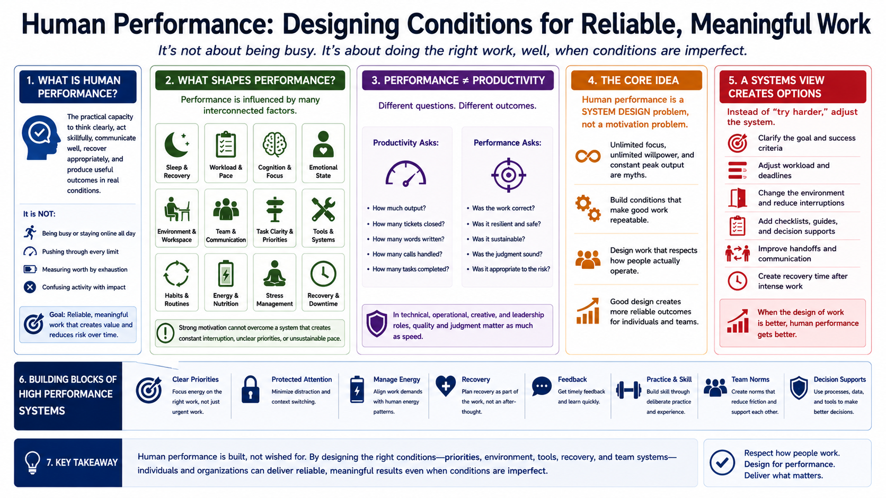

What Is Human Performance?
Connecting to LMS... Progress: in progress

Narration
Human performance is the ability to do meaningful work reliably under real conditions. It is not the same as being busy, staying online all day, or pushing through every limit. It is the practical capacity to think clearly, act skillfully, communicate well, recover appropriately, and produce useful outcomes when the environment is imperfect.
Performance is shaped by physical, cognitive, emotional, environmental, and social factors. Sleep, workload, stress, workspace setup, team communication, task clarity, tools, habits, and recovery all influence how people actually work. A person may have strong motivation and still perform poorly if the system around them creates constant interruption, unclear priorities, or unsustainable pace.
Performance is also different from productivity. Productivity often focuses on output volume: how many tickets closed, words written, calls handled, or tasks completed. Performance asks a broader question: was the work correct, resilient, sustainable, and appropriate to the risk? In technical, operational, creative, and leadership roles, quality and judgment matter as much as speed.
The core idea of this course is that human performance is a system design problem, not just a motivation problem. Unlimited focus, unlimited willpower, and constant peak output are myths. Strong performers build conditions that make good work repeatable: clear priorities, protected attention, recovery, feedback, practice, decision supports, and team norms that reduce avoidable friction.
This systems view is useful because it creates more options. Instead of asking people to simply try harder, leaders and individuals can adjust the workload, clarify the goal, change the environment, add a checklist, improve handoffs, or create recovery time after intense work. Human performance improves when the design of work respects how people actually operate.